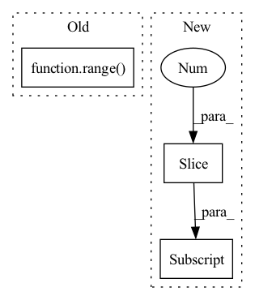

Pattern ID :260
Before Change
nn.ReLU()
])
for l in range( num_layers_linear_hidden - 1) :
self.operators.append(nn.Linear(hidden_dim, hidden_dim))
self.operators.append(nn.ReLU())
// self.operators.append(nn.Dropout(0.2))After Change
nn.Linear(in_dim, prev_object[1]),
])
for layer, argument in policy_structure[:-1] :
if layer == "linear":
self.operators.append(nn.Linear(prev_object[1], argument))
prev_object = (layer, argument)In pattern: SUPERPATTERN
Frequency: 4
Non-data size: 3
Instances Fragment ID: 1101024
Project Name: tmdt-buw/karolos
Commit Name: bda97ff0aa40ddff62e42733856c4c66cc37b8b6
Time: 2020-05-13
Author: timo.thun@ima-ifu.rwth-aachen.de
File Name: agents/nnfactory/sac.py
M Class Name: Policy
N Class Name: Policy
M Method Name: __init__(6)
N Method Name: __init__(7)
M Parent Class: nn.Module
N Parent Class: nn.Module
M File Name: agents/nnfactory/sac.py
N File Name: agents/nnfactory/sac.py
M Start Line: 65
M End Line: 87
N Start Line: 88
N End Line: 108
Before Change
stride=pooling_stride,
padding=pooling_padding) if max_pool else nn.Identity()
)
for i in range( n_conv_layers)
])
self.flattener = nn.Flatten(2, 3)
self.apply(self.init_weight)After Change
[in_planes for _ in range(n_conv_layers - 1)] + \
[n_output_channels]
n_filter_list_pairs = zip(n_filter_list[:-1] , n_filter_list[1:])
self.conv_layers = nn.Sequential(
*[nn.Sequential( Fragment ID: 1101025
Project Name: lucidrains/vit-pytorch
Commit Name: cb6d749821bbf3b0bd17c9e8e64eb343f40b3f69
Time: 2022-10-29
Author: lucidrains@gmail.com
File Name: vit_pytorch/cct.py
M Class Name: Tokenizer
N Class Name: Tokenizer
M Method Name: __init__(14)
N Method Name: __init__(14)
M Parent Class: nn.Module
N Parent Class: nn.Module
M File Name: vit_pytorch/cct.py
N File Name: vit_pytorch/cct.py
M Start Line: 167
M End Line: 187
N Start Line: 173
N End Line: 192
Before Change
):
self.cells = [
lstm_cell_type(input_size, hidden_size, **lstm_cell_kwargs).to(device)
for _ in range( num_layers)
]
self.input_size = input_size
self.hidden_size = hidden_size
self.num_layers = 0After Change
device=device,
**lstm_cell_kwargs
).to(device)
for in_size, out_size in zip(layer_sizes[:-1], layer_sizes[1:] )
]
self.input_size = input_size
self.hidden_size = hidden_size Fragment ID: 1101026
Project Name: kaleidophon/nlp-uncertainty-zoo
Commit Name: 9d09a1510e9130c547c50d1a18c80ed3ffe9cbbb
Time: 2021-08-11
Author: dennis.ulmer@gmx.de
File Name: nlp_uncertainty_zoo/lstm_variants.py
M Class Name: CustomLSTMLogic
N Class Name: CellWiseLSTM
M Method Name: __init__(8)
N Method Name: __init__(8)
M Parent Class: nn.Module
N Parent Class: nn.Module,ABC
M File Name: nlp_uncertainty_zoo/lstm_variants.py
N File Name: nlp_uncertainty_zoo/lstm_variants.py
M Start Line: 207
M End Line: 208
N Start Line: 204
N End Line: 213
Before Change
nn.ReLU()
])
for l in range( num_layers_linear_hidden - 1) :
self.operators.append(nn.Linear(hidden_dim, hidden_dim))
self.operators.append(nn.ReLU())
After Change
nn.Linear(in_dim + action_dim, prev_object[1]),
])
for layer, argument in value_structure[:-1] :
if layer == "linear":
self.operators.append(nn.Linear(prev_object[1], argument))
prev_object = (layer, argument) Fragment ID: 1101021
Project Name: tmdt-buw/karolos
Commit Name: bda97ff0aa40ddff62e42733856c4c66cc37b8b6
Time: 2020-05-13
Author: timo.thun@ima-ifu.rwth-aachen.de
File Name: agents/nnfactory/sac.py
M Class Name: Critic
N Class Name: Critic
M Method Name: __init__(4)
N Method Name: __init__(5)
M Parent Class: nn.Module
N Parent Class: nn.Module
M File Name: agents/nnfactory/sac.py
N File Name: agents/nnfactory/sac.py
M Start Line: 34
M End Line: 53
N Start Line: 45
N End Line: 65